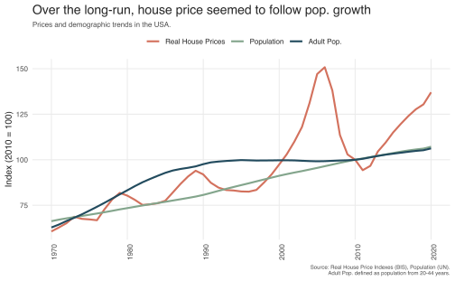
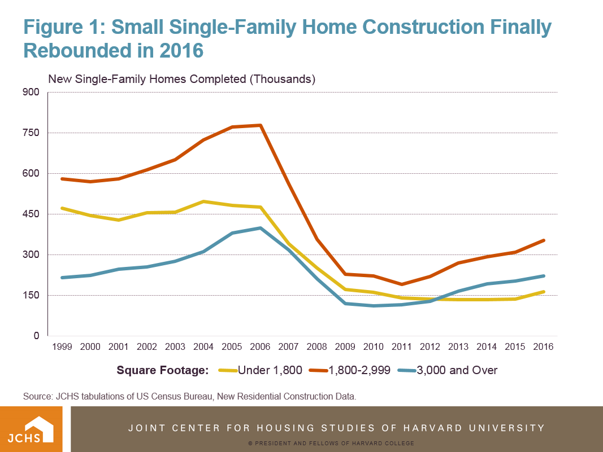
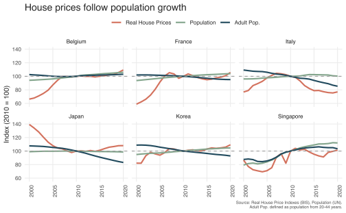
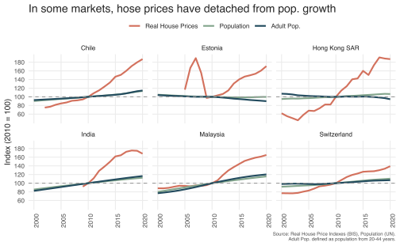
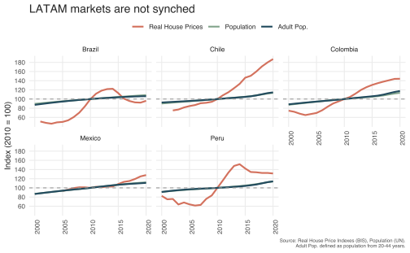
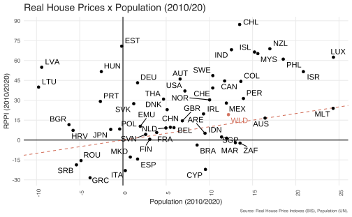

Code
library(dplyr)
library(tidyr)
library(stringr)
library(ggrepel)
library(here)
library(WDI)
library(showtext)Vinicius Oike
June 20, 2023
Já vi em alguns lugares uma suposta ligação entre fatores demográficos e tendências de longo prazo no mercado imobiliário. Intuitivamente, alguns dos principais motivadores para comprar ou vender um imóvel estão ligados a fatores demográficos: nascimentos, casamentos, divórcios ou óbitos.
Este tipo de análise omite fatores importantes como renda, condições de financiamento e o contexto geral da economia. Ainda assim, fiquei curioso para ver se havia algum padrão entre tendências demográficas mais simples e o comportamento dos preços.
font_add("Helvetica", "Helvetica.ttc")
showtext_auto()
colors <- MetBrewer::met.brewer("Hokusai1", n = 8)[c(3, 7, 8)]
theme_vini <- theme_minimal() +
theme(
panel.grid.minor = element_blank(),
panel.background = element_rect(fill = "white", colour = "white"),
plot.background = element_rect(fill = "white", colour = "white"),
legend.position = "top",
legend.box.margin = margin(0),
legend.margin = margin(0),
text = element_text(family = "Helvetica", size = 10, color = "gray15"),
plot.title = element_text(size = 14),
plot.subtitle = element_text(size = 8, color = "gray30"),
plot.caption = element_text(size = 6, color = "gray30"),
axis.text.x = element_text(angle = 90)
)Para montar um painel de dados usei preços de imóveis do Bank for International Settelments (BIS), que reúne índices de preços imobiliários de diversos países do mundo. Os dados demográficos, de crescimento econômico, e share de população adulta, vem do Banco Mundial. Como os dados demográficos dependem de censos populacionais que demoram a ser divulgados, tive que restringir a amostra até 2020 para garantir que os dados fossem comparáveis no maior número possível de países.
# Import house price indexes from BIS #
bis <- readr::read_csv(here("posts/general-posts/repost-precos-imoveis-demografia/rppi_bis_data.csv"))
bis <- bis %>%
filter(year >= 1960, unit == "Index, 2010 = 100")
bis_real <- bis %>%
filter(nominal == "Real") %>%
select(year, country = reference_area, value) %>%
group_by(year, country) %>%
summarise(index_house = mean(value, na.rm = T))
bis_nominal <- bis %>%
filter(nominal == "Nominal") %>%
select(year, country = reference_area, value) %>%
group_by(year, country) %>%
summarise(index_house = mean(value, na.rm = T))
# Import demographic data from WBD #
wdi_names <- as_tibble(WDI_data$country)
#search <- WDIsearch("population")
# Total population
pop <- WDI(indicator = "SP.POP.TOTL")
# Population growth
pop_growth <- WDI(indicator = "SP.POP.GROW")
# Adult population
codes <- c(
"SP.POP.2024.MA", "SP.POP.2529.MA", "SP.POP.3034.MA", "SP.POP.3539.MA",
"SP.POP.4044.FE", "SP.POP.2024.FE", "SP.POP.2529.FE", "SP.POP.3034.FE",
"SP.POP.3539.FE", "SP.POP.4044.FE")
adult_pop <- WDI(indicator = codes)
tbl_pop_adult <- adult_pop %>%
select(-iso2c, -iso3c) %>%
pivot_longer(cols = -c(year, country)) %>%
group_by(year, country) %>%
summarise(pop_adult = sum(value, na.rm = T)) %>%
ungroup() %>%
mutate(
country = str_replace_all(country, "Hong Kong SAR, China", "Hong Kong SAR"),
country = str_replace_all(country, "Korea, Rep.", "Korea"),
country = str_replace_all(country, "Russian Federation", "Russia"))
tbl_pop <- pop %>%
mutate(
country = str_replace_all(country, "Hong Kong SAR, China", "Hong Kong SAR"),
country = str_replace_all(country, "Korea, Rep.", "Korea"),
country = str_replace_all(country, "Russian Federation", "Russia")) %>%
select(year, country, pop = SP.POP.TOTL) %>%
arrange(year) %>%
left_join(tbl_pop_adult)
base_pop <- tbl_pop %>%
filter(year == 2010) %>%
select(country, base_pop = pop, base_pop_adult = pop_adult)
tbl_pop <- tbl_pop %>%
left_join(base_pop) %>%
mutate(
index_pop = pop / base_pop * 100,
index_pop_adult = pop_adult / base_pop_adult * 100
)
# Join information across tables
# Real property prices
tbl <- bis_real %>%
filter(year >= 1970, year <= 2020) %>%
left_join(tbl_pop) %>%
select(year, country, index_house, index_pop, index_pop_adult) %>%
pivot_longer(cols = -c(year, country), names_to = "index")
# Nominal property prices
tbl_nominal <- bis_nominal %>%
filter(year >= 1970, year <= 2020) %>%
left_join(tbl_pop) %>%
select(year, country, index_house, index_pop, index_pop_adult) %>%
pivot_longer(cols = -c(year, country), names_to = "index")
# Convert real prices to wide and compare evolution
tbl_wide <- tbl %>%
filter(
year %in% c(2010, 2020),
index %in% c("index_house", "index_pop")
) %>%
group_by(country, index) %>%
mutate(diff = diff(value)) %>%
ungroup() %>%
filter(year == 2020) %>%
pivot_wider(id_cols = country, names_from = index, values_from = diff) %>%
left_join(select(wdi_names, country, iso3c)) %>%
mutate(highlight = factor(if_else(country == "World", 1, 0)))
tbl_wide_lr <- tbl_nominal %>%
filter(
year %in% c(1990, 2020),
index %in% c("index_house", "index_pop")
) %>%
group_by(country, index) %>%
mutate(diff = diff(value)) %>%
ungroup() %>%
filter(year == 2020, !is.na(diff)) %>%
pivot_wider(id_cols = country, names_from = index, values_from = diff) %>%
left_join(select(wdi_names, country, iso3c)) %>%
mutate(highlight = factor(if_else(country == "World", 1, 0)))
sel <- c("Australia", "United States", "Japan", "Germany", "Austria", "France")
sel_latam <- c("Chile", "Brazil", "Peru", "Mexico", "Colombia")Nos gráficos abaixo eu destaco a variação real do preços dos imóveis (isto é, descontando a inflação geral) e variação no crescimento da população. Considero tanto o nível geral da população como da população adulta (aqui definida como a população de 20 a 44 anos, que formam o grosso da demanda por nova habitação).
O gráfico abaixo mostra como estas variáveis evoluíram nos EUA desde 1970. Durante os anos 1970 até o começo dos anos 2000 parece haver uma ligação próxima entre o mercado imobiliário e o crescimento da população. O descolamento começa ali por volta de 2002 e culmina na Crise Imobiliária e na Crise dos anos 2008-09. Após a Crise, os preços caem até o início de 2010; de lá pra cá os preços voltaram a subir, impulsionados pela baixíssima taxa de juros da economia norte americana neste período.
p1 <-
ggplot(
filter(tbl, country == "United States"),
aes(x = year, y = value, color = index)
) +
geom_line(linewidth = 1) +
scale_color_manual(
values = colors,
name = "",
labels = c("Real House Prices", "Population", "Adult Pop.")
) +
labs(
title = "Over the long-run, house price seemed to follow pop. growth",
y = "Index (2010 = 100)",
x = NULL,
caption = "Source: Real House Price Indexes (BIS), Population (UN).\nAdult Pop. defined as population from 20-44 years."
) +
theme_vini
p1 +
labs(subtitle = "Prices and demographic trends in the USA.")
Olhando somente para este gráfico a história parece convincente, mas acho que por trás da recente valorização de imóveis está a escassez de novos imóveis no mercado. A imagem abaixo vem de um estudo do Joint Center for Housing Stuides (JCHS) da Universidade de Harvard. Fica evidente como a construção de novos imóveis desacelerou muito na última década. Em estudos com horizontes mais longos, que voltam até a década de 1930 ou 1940, vê-se que a construção está em um de seus pontos mais baixos na história.
A escassez de oferta junto com uma tendência de concentração populacional em grandes metrópoles (com péssimas leis de zoneamento, como São Fransisco, por exemplo) - para mim - é uma história muito mais convincente do que imaginar que está havendo uma bolha imobiliária.

No agregado dos dados encontrei mais alguns países em que os preços parecem seguir as tendências demográficas. É o caso, por exemplo, de Cingapura, Japão e Itália. Vale notar que estes são países, atualmente, têm baixo crescimento populacional e vivem o envelhecimento de suas populações.
sel_conforme <- c("Singapore", "Belgium", "France", "Japan", "Korea", "Italy")
sel_acima <- c("Switzerland", "Hong Kong SAR", "Chile", "India", "Malaysia", "Estonia")
p2 <-
ggplot(
filter(tbl, country %in% sel_conforme, year >= 2000),
aes(x = year, y = value, colour = index)
) +
geom_line(linewidth = 1) +
geom_hline(yintercept = 100, linetype = 2, color = "gray60") +
facet_wrap(~country) +
scale_color_manual(
values = colors,
name = "",
labels = c("Real House Prices", "Population", "Adult Pop.")) +
scale_y_continuous(breaks = seq(60, 140, 20)) +
labs(
title = "House prices follow population growth",
x = NULL,
y = "Index (2010 = 100)",
caption = "Source: Real House Price Indexes (BIS), Population (UN).\nAdult Pop. defined as population from 20-44 years."
) +
theme_vini
p2
Mas há tabmém vários outros em que população e preços divergem. Vale lembrar que estamos comparando índices de preços imobiliárias reais, isto é, já descontando o efeito da inflação: no Chile, por exemplo, o preço médio dos imóveis cresceu cerca de 100% acima do nível da inflação (dobrou nos últimos dez anos). Chile e Hong Kong, em particular, são dois países onde o aumento do preço dos imóveis causou bastante revolta popular em anos recentes1.
p3 <-
ggplot(
filter(tbl, country %in% sel_acima, year >= 2000),
aes(x = year, y = value, colour = index)
) +
geom_line(linewidth = 1) +
geom_hline(yintercept = 100, linetype = 2, color = "gray60") +
facet_wrap(~country) +
scale_color_manual(
values = colors,
name = "",
labels = c("Real House Prices", "Population", "Adult Pop.")) +
scale_y_continuous(breaks = seq(60, 200, 20)) +
labs(title = "In some markets, hose prices have detached from pop. growth",
x = NULL,
y = "Index (2010 = 100)",
caption = "Source: Real House Price Indexes (BIS), Population (UN).\nAdult Pop. defined as population from 20-44 years.") +
theme_vini
p3
Por curiosidade, resolvi olhar os países da América Latina.
No caso do Brasil, vemos que os preços entraram em queda seguindo a recessão de 2014 e, a despeito de uma recuperação recente, ainda estão em níveis mais baixos do que os observados em 2010. De maneira geral, os preços parecem ter ligação nenhuma com o crescimento da população. Vale lembrar que o mercado imobiliário no Brasil é fortemente subsididado e pouco alavancado de maneira geral.
Chile e Colômbia parecem exibir uma tendência similar de crescimento, mas a alta pós-2010 no Chile é assustadora. Em termos reais, os preços dos imóveis quase dobraram em dez anos.
Outro ponto interessante é que os mercado não parecem exibir muito sincronismo (no olho, não parecem séries cointegradas) ao contrário do que se observa em mercados mais integrados como a Zona do Euro.
p4 <-
ggplot(
filter(tbl, country %in% sel_latam, year >= 2000),
aes(x = year, y = value, colour = index)
) +
geom_line(linewidth = 1) +
geom_hline(yintercept = 100, linetype = 2, color = "gray60") +
facet_wrap(~country) +
scale_color_manual(
values = colors,
name = "",
labels = c("Real House Prices", "Population", "Adult Pop.")) +
scale_y_continuous(breaks = seq(60, 200, 20)) +
labs(title = "LATAM markets are not synched",
x = NULL,
y = "Index (2010 = 100)",
caption = "Source: Real House Price Indexes (BIS), Population (UN).\nAdult Pop. defined as population from 20-44 years.") +
theme_vini
p4
Esta análise é ainda bastante preliminar. Ainda que a demografia seja um motor para a demanda imobiliária, outros fatores como oferta de moradia e condições de crédito são importantes demais parecem serem omitidos.
O gráfico abaixo compara a população em 2010/2020 com os preços em 2010/2020. Os países ao lado direito do gráfico, são os países onde houve crescimento populacional. Os países na parte de cima do gráfico são os países onde houve crescimento real do preço dos imóveis. Na média da amostra, destacada como WLD, houve crescimento de ambos.
Países que estão muito para cima como Chile (CHL), Índia (IND) e Estônia (EDT) estão com imóveis muito “caros”. Já em países com França e Finlândia tanto a população como o nível de preço dos imóveis cresceram muito pouco. No caso da Grécia, tanto a população como o preço dos imóveis diminuiu nos últimos dez anos.
O gráfico não me surpreendeu muito, mas esperava que os EUA estivessem mais para cima no gráfico e que o Brasil estivesse ao menos do lado positivo do eixo-x. Isso me sugere que a impressão de que os imóveis no Brasil são ou estão caros tem muito mais a ver com a baixa renda da população.
p5 <-
ggplot(
data = na.omit(tbl_wide),
aes(x = index_pop, y = index_house)
) +
geom_hline(yintercept = 0) +
geom_vline(xintercept = 0) +
geom_abline(slope = 1, intercept = 0, linetype = 2, color = colors[1]) +
geom_point(aes(color = highlight)) +
geom_text_repel(aes(label = iso3c, color = highlight)) +
scale_x_continuous(breaks = seq(-10, 30, 5)) +
scale_y_continuous(breaks = seq(-30, 90, 15)) +
scale_color_manual(values = c("black", colors[1])) +
guides(color = "none") +
labs(
title = "Real House Prices x Population (2010/20)",
x = "Population (2010/2020)",
y = "RPPI (2010/2020)",
caption = "Source: Real House Price Indexes (BIS), Population (UN).") +
theme_vini
p5
Hong Kong: https://exame.com/economia/as-raizes-economicas-dos-protestos-de-hong-kong/↩︎